Oil Pan: Service and Repair
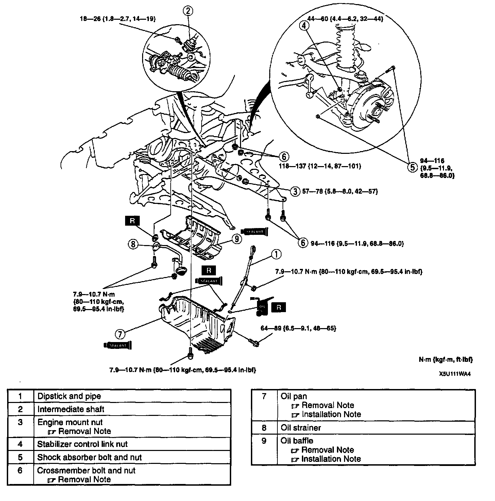
OIL PAN REMOVAL/INSTALLATION
1. Disconnect the negative battery cable.
2. Remove the air cleaner component.
Caution:
^ Performing the following procedures without first removing the ABS wheel-speed sensor may possibly cause an open circuit in the harness if it is pulled by mistake. Before performing the following procedures, remove the ABS wheel-speed sensor (axle side) and fix it to an appropriate place where the sensor will not be pulled by mistake while servicing the vehicle.
3. Remove the ABS wheel-speed sensor.
4. Drain the engine oil.
5. Remove in the order indicated in the table.
6. Install in the reverse order of removal.
Engine Mount Nut Removal Note
1. Loosen the oil pan mounting bolts.
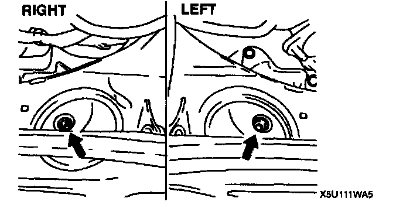
2. Remove the engine mounting nuts.
3. Lift the engine slightly by using a hoist.
Crossmember Bolt and Nut Removal Note
1. Support the crossmember by using a transmission jack.
2. Remove the crossmember bolts and nuts.
Caution:
^ Do not damage the brake hoses, A/C pipes and P/S pipes when lowering the crossmember.
Note:
^ Lower the crossmember after separating the steering intermediate shaft from the pinion shaft.
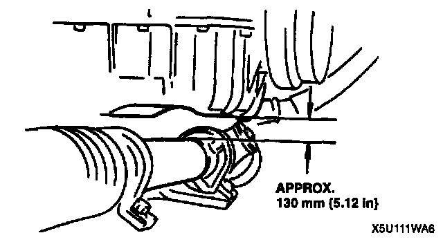
3. Lower the crossmember until the clearance between the oil pan and the steering gear housing exceeds approx. 130 mm (5.12 inch).
Oil Pan Removal Note
1. Remove the oil pan mounting bolts.
Caution:
^ Pry tools can easily scratch the cylinder block and the oil pan contact surfaces. Prying off the oil pan can also easily bend the oil pan flange. Refer to the following instructions before removing the oil pan.
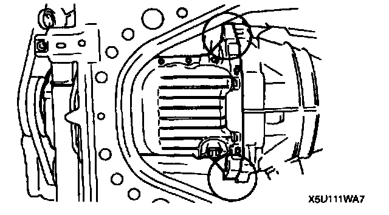
2. Insert a screwdriver only at the points shown in the image.
Oil Baffle Removal Note
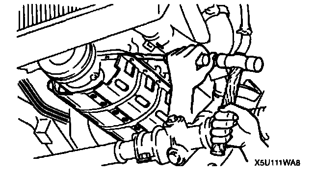
^ Insert a screwdriver or a separator tool between the cylinder block and the oil baffle.
Oil Baffle Installation Note
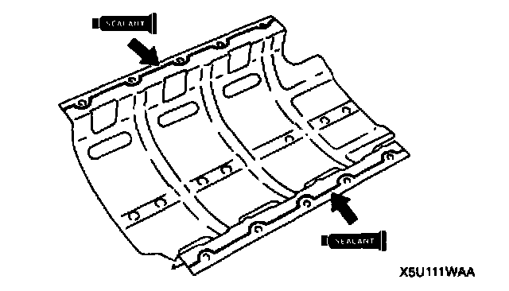
^ Apply silicone sealant to the oil baffle along the inside of the bolt holes.
Thickness: 2.5 - 3.5 mm (0.099 - 0.137 inch)
Oil Pan Installation Note
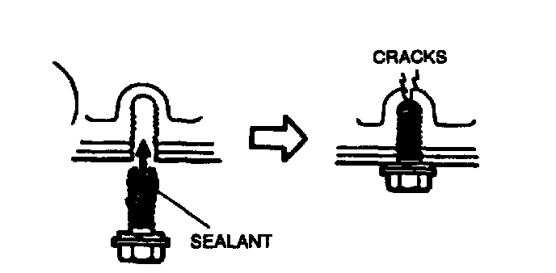
Caution:
^ If the bolts are reused, remove the old sealant from the bolt threads. Tightening a bolt that has old sealant on It can cause thread damage.
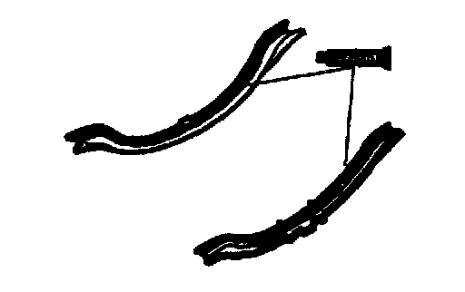
1. Apply silicone sealant to the contact surfaces of new oil pan gaskets as shown.
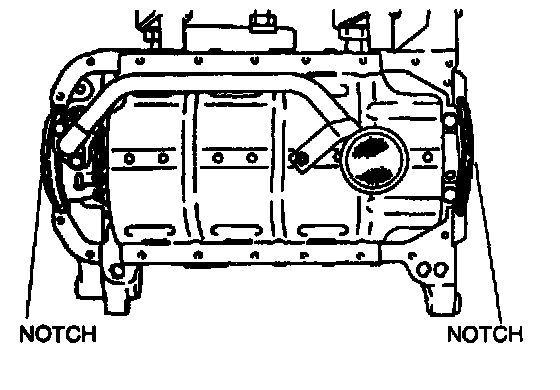
2. Install new gaskets onto the oil pump body and the rear cover facing the notches as shown.
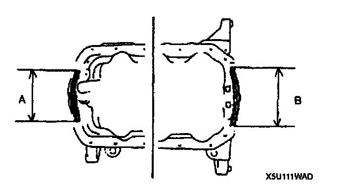
3. Apply silicone sealant onto the area of oil pan gasket indicated by A and B.
Thickness: 2.0 mm (0.079 inch)
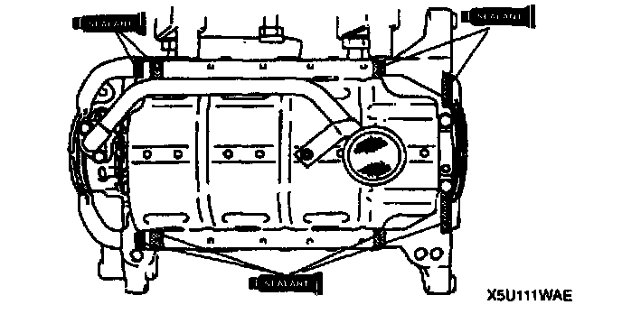
4. Apply silicone sealant to the shaded areas shown.
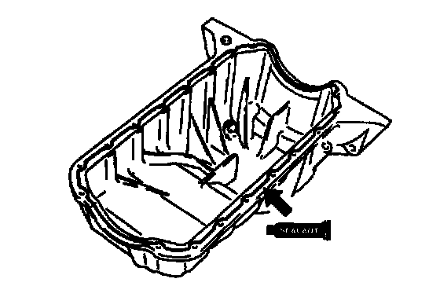
5. Apply silicone sealant to the oil pan along the inside of the bolt holes and overlap the ends.
Thickness: 2.5 - 3.5 mm (0.099 - 0.137 inch)